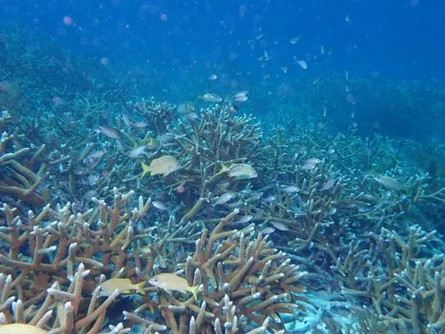

其他无脊椎动物 · 动物界
鹿角珊瑚 Acropora cervicornis

分枝如鹿角、生长迅速的加勒比造礁珊瑚，曾覆盖大片礁坡，因白带病与海水升温被评估为极危。
- 分类
- 门刺胞动物门纲珊瑚纲目石珊瑚目科鹿角珊瑚科属鹿角珊瑚属
- 栖息环境
- 加勒比海珊瑚礁礁坡与潟湖浅水区
- 地理分布
- 加勒比海，自佛罗里达、巴哈马至巴拿马、委内瑞拉
- 保护级别
- 被评估为极危，受白带病与海水升温严重打击
物种志
鹿角珊瑚的群体呈树枝状，分枝圆柱形，向上和向外伸展，形如鹿角，长度可达一两米。活体组织呈黄褐至淡褐色，枝端色浅，珊瑚杯细小，水螅体在夜间伸出。它是造礁石珊瑚中生长最快的种类之一，一年可长十余厘米，靠分枝断裂进行无性繁殖，断枝落地后能重新固着生长。
它分布于加勒比海，从佛罗里达、巴哈马到巴拿马、委内瑞拉，栖息在珊瑚礁礁坡和潟湖的浅水区，与虫黄藻共生，靠共生藻的光合作用获取大部分能量。二十世纪后期，白带病和海水升温导致其种群锐减八成以上，如今被评估为极危。珊瑚礁退化会影响整个礁区鱼类和无脊椎动物的栖息，目前多地正通过人工繁育和移植进行修复。
形态与习性
- 群体形态树枝状分枝，形如鹿角，长达一两米
- 共生与虫黄藻共生，靠光合作用供能
- 生长造礁珊瑚中生长最快者之一
- 繁殖分枝断裂进行无性繁殖
- 威胁白带病与海水升温致种群锐减
- 保护被评估为极危，多国开展人工修复
趣味知识
- 它长得像鹿角，断下的一截枝条落在礁石上还能长成新群体。
- 白带病会从枝基部一路向上蔓延，留下一条白色的死珊瑚带。
- 它一年能长十几厘米，是造礁珊瑚里的生长冠军。
生态关系
- 栖息 → 扬幡蝴蝶鱼 珊瑚礁为鱼类提供栖息与庇护